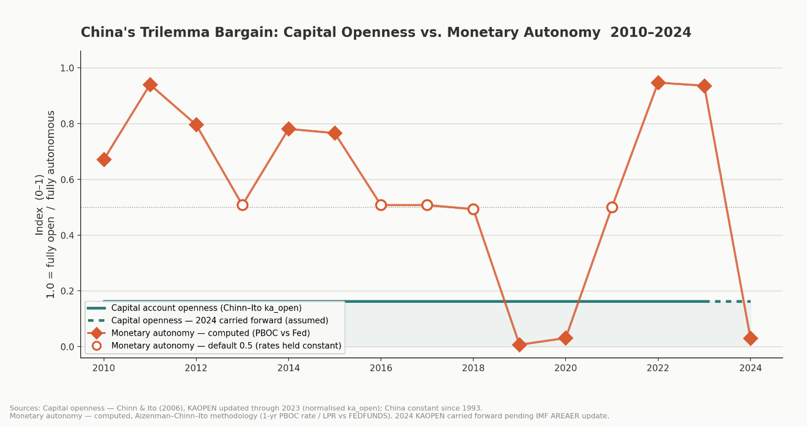
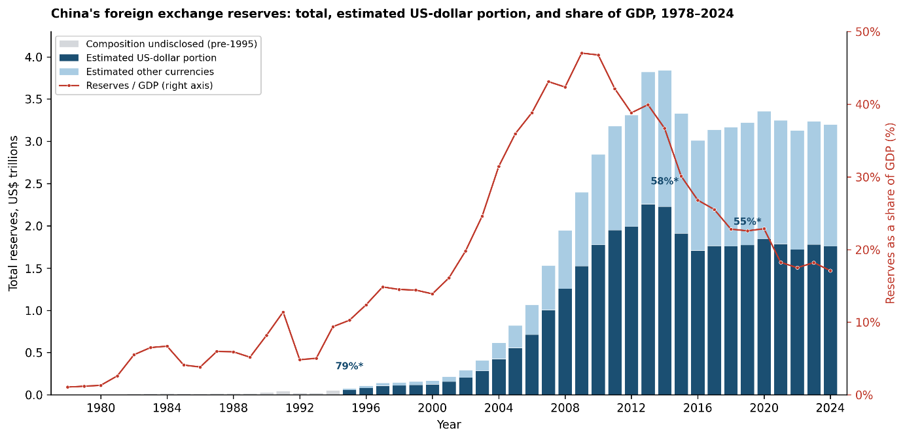
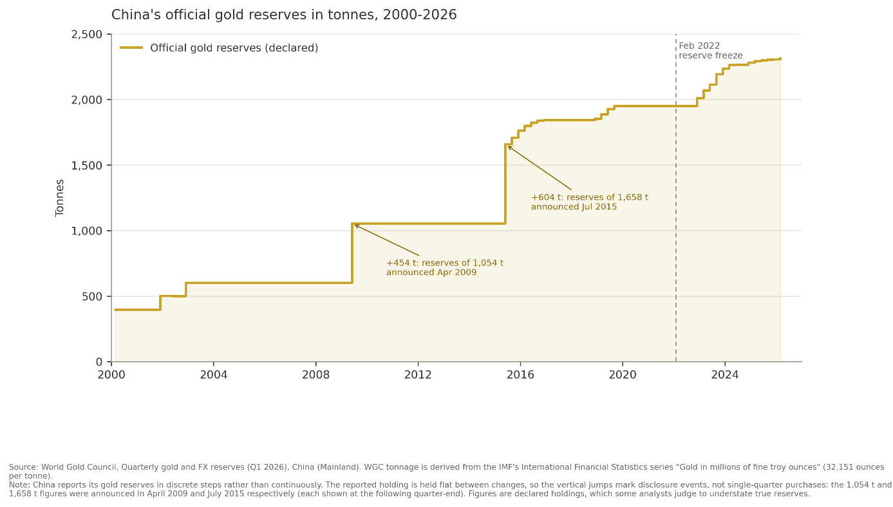
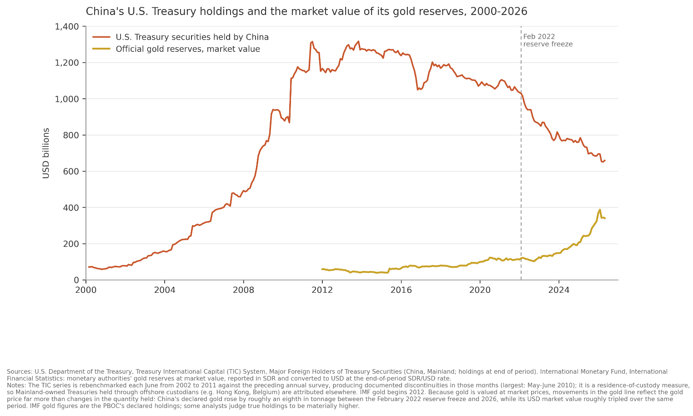

Fragmentation of the payment system is one of the most important monetary trends of the past decade, and financial sanctions have emerged as the United States' preferred tool of statecraft. Meanwhile China is building alternatives that amount to a group of states sanction-proofing themselves, or an insurance policy against US and European Union coercion. This is a question for policymakers in both regions. The same goes for how far the financial sanctions weapon can be stretched before it ultimately overstretches. The literature has mostly asked and answered something narrower, whether the renminbi can rival the dollar, with the answer being a rather decisive no. A better argument states that the scoreboard is wrong, and that the real Chinese objective is not macroeconomic hegemony or bipolarity, but rather macroeconomic autonomy.
Subramanian (2011) and Subramanian and Kessler (2012) argue that China's massive share of global GDP and trade will inevitably push the renminbi (RMB) to rival or surpass the dollar. Liao and McDowell (2016) demonstrate that central bank adoption of the RMB is a deliberate political endorsement of China's expanding international power. Hilpert (2024) claims that China not only desires reduced monetary dependence on the US, but wants to establish effective leverage vis-à-vis third countries. Cohen (2018) most notably argues that twenty-first-century monetary relations are a duel between the US's greenback and the PRC's RMB, and views China as aggressively deploying statecraft to climb the higher strata of the global monetary hierarchy. All of these arguments point toward the same US-versus-China hegemonic battle logic. The autonomy perspective, which this article subscribes to, does not offer a weak standing against it. Hofman and Petry (2025) claim it is better to think about RMB internationalisation in terms of autonomy rather than influence. Taylor (2025, p. 440) notices that the preference for control takes precedence over the liberalisation necessary to make the RMB a fully competitive global reserve currency, and sees today's development pointing toward selective diversification and hedging strategies. For Bowles and Wang (2013) the strategy is protective and risk-averse, meant to shield Chinese trade from dollar volatility while preserving domestic financial repression. Goghie (2024) argues that China is trying to lift itself out of the original sin identified by Eichengreen and Hausmann (1999). The two readings are harder to separate than the disagreement suggests, because they basically predict the same observations. A state building the infrastructure to defend itself would maybe act the same way as a state striving for hegemony, but under binding constraints.
The scoreboard answers a different question
Faced with that, the field has reached for a scoreboard. Authors refer to the low amount of central bank reserves globally denominated in RMB, only 2% according to IMF COFER data, a share similar to that of the Canadian dollar. Others point to the discrepancies between SWIFT1 and CHIPS, and CIPS2, and Subacchi (2017) famously characterised the renminbi as a dwarf currency. The figures hold up. CIPS processes around 100 billion dollars daily against CHIPS3 2 trillion, a relatively similar discrepancy can be found when comparing it with SWIFT. Looking at these numbers through a specific China-desiring-hegemony lens brings very negative results for the country, which tells you how the lens was ground rather than what China wants. That stale comparison is worth arguing against, and the better comparison is China today versus the China of its recent past, which was significantly worse off. The question is not whether the renminbi will displace the dollar, which the literature has asked and answered. It is how a strategy that looks incoherent as a hegemony bid becomes coherent once its goal is read as autonomy.
Assessing each instrument twice over
The necessary reframing, from challenger to insurance seeker, can be operationalised, because hegemony in the monetary domain is not autonomy at scale. It is the capacity and willingness to constrain others, which is what Cohen (2008) separates as influence. A state can accumulate a great deal of the former while making no bid for the latter. Delay, deflection and resilience are all defensive capacities, and that is what separates autonomy from hegemony. Autonomy here follows Cohen (2005) in Vermeiren's (2013) reading, the power to delay and the power to deflect the costs of balance-of-payments adjustment. To make the concept fit the post-2022 juncture of a world that knows weaponised interdependence, a third component is added in, framed as coercive resilience, the ability to conduct essential international transactions without depending on infrastructure controlled by a potential adversary (Farrell and Newman, 2019). Reframing the question this way takes seriously Cohen's (2015) observation that states may internationalise their currencies for goals other than hegemony, with there being different types of internationalised currencies (Strange, 1971), and follows recent work treating payment infrastructure as a site of monetary power (Hofman and Petry, 2025; Zucker-Marques, 2025). Each instrument of China’s currency internationalisation strategy is therefore assessed twice over in this paper: firstly for what it adds to delay, deflection and resilience, all together constituting macroeconomic autonomy, and for whether the same capability could be turned outward against the states that use it.
What the dollar trap actually cost
Over three decades China accumulated a staggering amount of foreign exchange reserves (Helleiner & Kirshner, 2014). Especially from 2003 to 2008 the export-oriented industries and their political patrons pushed hardest, and did not care about the quantity of reserves at all as long as the exchange rate did not appreciate. That dollar position bought delay. China could resist sustained American pressure for renminbi appreciation through the 2000s, and again after the August 2015 devaluation. But delay purchased this way is what Cohen (2008) calls passive monetary autonomy, which cannot be used to exert influence. It is a clear example of China operating within the confines of the international monetary system without vying for hegemony, and it came at the price of deep structural dependence. Reserves held in another state's currency can be frozen, so the accumulation constitutes a net erosion of macroeconomic autonomy through lost coercive resilience. In addition, these reserves can also lose value in real terms due to heavy inflation or exchange rate changes. That is the dollar trap, and China cannot easily exit it without triggering a dollar collapse that would hurt it more than anyone. Setser (2026) today still puts the dollar at 55% of the reserve portfolio.
Measuring monetary independence
Establishing how much autonomy China has, is a difficult task. Autonomy is not some easily definable concept, but rather hard to operationalise. The standard instrument is the monetary independence component of the ACI index4, derived from the correlation between domestic and base-country interest rates (Aizenman, Chinn and Ito, 2008). The series itself views structural US monetary dominance as a reason to pick the United States for this base-country. For this paper, I did not use the published series of both authors, but decided to recompute it. The published index uses money market rates. This series uses the People’s Bank of China (PBoC) one-year benchmark lending rate to August 2019 and the one-year Loan Prime Rate (LPR) afterwards, reflecting the reform which made the LPR the pricing benchmark. The reasoning is that these are the rates through which the PBoC transmits policy to domestic borrowers, and therefore the rates at which a divergence from US policy becomes visible to Chinese firms and households. To make a long story short, the published series for China is substantially a record of an administered rate being held constant rather than a measurement of policy divergence, hence the reasoning to compute a new one.

I want to be careful about what my series does and does not establish. My computed series is more responsive to the years in which rates actually moved, which is why it is used here, and it is more volatile for exactly the same reason. The PBoC is not always following the Federal Reserve (Fed)'s easing or tightening cycles, which demonstrates a capacity to act autonomously on interest rates. In 2022 the Chinese central bank diverged heavily from the Fed, and a state whose monetary conditions are set abroad cannot produce a divergence of that sign and size. China finds itself in a dollar trap, however, and is therefore winning monetary autonomy in the narrow sense and losing for macroeconomic autonomy in the broader one, because of the coercive resilience it gave away.

The dollar share plotted above is interpolated between five irregular disclosures from SAFE5, at 79 per cent for 1995, 58 per cent across 2014 to 2017, 57 per cent for 2018 and 55 per cent for 2019, with nothing disclosed since. Values after 2019 are held flat as an assumption and marked as such. The measure also covers just one portfolio, while dollar assets have accumulated at the state commercial banks, the policy banks and China Investment Corporation. Total state dollar exposure is therefore probably higher than any composition ratio for reserves alone can show, as Setser (2026) also notes.
Three findings of autonomy
On store-of-value at scale, the verdict is unambiguous. A hegemon's currency is held, which requires an open capital account, deep secondary markets and a large stock of safe assets. In the Dominant Currency Paradigm of Gopinath et al., dominance must run through invoicing, bank funding and reserves at once. The RMB cannot become dominant in those terms with a closed capital account, and will not gain the exorbitant privilege. The fact alone that China is stuck so deep in the dollar trap means it has a large stake in the world's current hegemon remaining on top for some time to come. This is where the strategy stops looking like a failed climb. What China pursues is a selective thin internationalisation, concentrated in the settlement and medium-of-exchange functions of money, which explicitly excludes the store-of-value function that would require open capital markets. The Mundellian trilemma, and Rey's (2015) consequent dilemma, hold that full internationalisation requires capital openness, which per Rey destroys autonomy. Thin settlement-function internationalisation through controlled infrastructure does not, however. This refraining is not a shortfall against the plan, it more so is the plan.
On systemic provision, the verdict is the same. Kindleberger's stabiliser (a.k.a. hegemon) lends counter-cyclically and acts as lender of last resort, and the Fed drew its lines at enormous scale in 2008 and 2020. The PBoC's network reaches 42 countries and regions with headline capacity above 660 billion USD, but it is bilateral, discretionary and two-tiered, structured so that the partner central bank absorbs the credit risk, and actual drawbacks are only a small fraction of that headline capacity (Horn, Sebastian, Parks, Reinhart & Trebesch, 2023). China captures the leverage of provision while declining its cost, which is the shortage Nye (2017) named the Kindleberger trap. Conditionality makes the point sharpest. The IMF attaches policy conditions to emergency lending, which is the mechanism by which money becomes influence. China attaches almost nothing, and shields recipient states from Western macroeconomic conditionality instead (Chorzempa, Martin, Lukas Spielberger, 2025).
On chokepoint authority, the finding is the most telling. China is building the infrastructure: clearing banks under Chinese oversight, a settlement system the PBoC supervises, panopticon visibility over cross-border renminbi flows. What is missing is the closure that makes a chokepoint bind. CIPS has remained interoperable with SWIFT, access has never been withheld, CFETS keeps foreign participation tiered rather than maximised, and mBridge has been kept multilateral. Not only is China barely creating any real chokepoints for itself to own, the alternatives it does create run parallel to the ones the US and EU already control. This means that the central chokepoints, so centrally described by Farrel and Newman (2023), are not being built by China. In fact, the CIPS record runs the other way. McDowell (2023) links accession to sanctions: four Turkish banks joined in 2018 amid US measures against Turkish officials, Iranian banks in 2019 a year after the American withdrawal from the Joint Comprehensive Program Of Action (JCPOA), and Belarus connected in 2022 following the EU's decision to exclude three Belarusian banks from SWIFT. States arrive at CIPS because a Western door was shut firmly behind them. A state building a hub in order to project leverage would want the opposite. It would desire as much participation in its network as possible, in order to break the dollar's network effects.
Gold inverts the bargain

Gold is the clearest case of the trade being made deliberately. Official holdings grew from roughly 600 tonnes in 2008 to 2,346 tonnes by June 2026, and the timing is very telling. China ceased adding to its Treasury holdings around 2014, following the first round of US sanctions on Russia, and reduced them sharply after February 2022, against a stable reserve total and immediately after the freezing of Russia's dollar assets. Measured against Treasuries, the gold position changed drastically from 7% in 2018 to 52% by 2026, though a large part of that increase is the gold price rather than the stock. Gold vaulted domestically cannot be frozen, sanctioned or seized (Arslanalp, Eichengreen and Simpson-Bell, 2023). It is the only major reserve asset that is not simultaneously another state's liability and does not settle through infrastructure that state controls. In Farrell and Newman's terms it sits outside the underground empire altogether: no hub through which a transaction record passes, and no node that can be closed. What it buys is bounded, and I would not overstate it. At 8.9% of total reserves, well below the global central bank average of around 21% (Lequillerier, 2026), and in a market considerably thinner than that for Treasuries, gold could substitute for only a fraction of what a freeze would immobilise.

The limit of the test
A test built on forgone leverage measures one moment, and does not forecast some state of affairs in the future. A state building autonomy-seeking capacity and a state building hegemonic capacity under binding constraints may share a track record. Hegemony could, of course, be a goal of China's in disguise, or for the long run, and I take this to be the most serious limitation of the argument. The closure has been left out rather than made impossible, and the CCP's interest in the development of CIPS is not in doubt. What the test does offer, on the other hand, is a way to be wrong on schedule. Should Beijing begin attaching policy conditions to its swap lines, withhold CIPS access from a state it is in conflict with, or push its lending into renminbi denomination, the reading advanced here fails, and it fails visibly. Settling the matter more directly would require a discourse analysis of what Chinese policymakers and academics say among themselves, which would be riveting, and which no amount of infrastructure-watching can replace. For now the pattern, as I demonstrated, runs one way. The hegemonic conditions would demand the opposite of what China has chosen at every threshold: exposure in exchange for being held, cost absorption in exchange for constituency, openness in exchange for others' dependence. China's strategy looks incoherent as a challenge to the dollar, but coherent as an insurance policy against it. Renminbi internationalisation thus provides China with genuine macroeconomic autonomy precisely through what it does not become.
Notes
- Society for Worldwide Interbank Financial Telecommunication
- Chinese alternative Cross-Border Interbank Payment System
- Clearing House Interbank Payments System
- Aizenman-Chinn-Ito trilemma index
- State Administration of Foreign Exchange
References
- Andrade, Rogério P., and Daniela M. Prates. 2013. "Exchange Rate Dynamics in a Peripheral Monetary Economy." Journal of Post Keynesian Economics 35 (3): 399–416. https://doi.org/10.2753/PKE0160-3477350304.
- Aizenman, Joshua, Menzie Chinn, and Hiro Ito. 2008. "Assessing the Emerging Global Financial Architecture: Measuring the Trilemma's Configurations over Time." NBER Working Paper 14533. https://doi.org/10.3386/w14533.
- Arslanalp, Serkan, Barry Eichengreen, and Chima Simpson-Bell. 2023. "Gold as International Reserves: A Barbarous Relic No More?" IMF Working Paper 23/14. https://doi.org/10.5089/9798400229947.001.
- Board of Governors of the Federal Reserve System. 2026. "Federal Funds Effective Rate (FEDFUNDS)." Retrieved from FRED, Federal Reserve Bank of St. Louis. Accessed August 10 2026. https://fred.stlouisfed.org/series/FEDFUNDS.
- Bowles, Paul, and Baotai Wang. 2013. "Renminbi Internationalization: A Journey to Where?" Development and Change 44 (6): 1363–85. https://doi.org/10.1111/dech.12058.
- China Foreign Exchange Trade System. n.d. "Loan Prime Rate (LPR)." National Interbank Funding Center. Accessed August 10 2026. https://lpr.nifc.org.cn.
- Chinn, Menzie D., and Hiro Ito. 2023. "The Chinn-Ito Index: A De Jure Measure of Financial Openness." Accessed August 10 2026. https://web.pdx.edu/~ito/Chinn-Ito_website.htm.
- Chorzempa, Martin, and Lukas Spielberger. 2025. "Significant, but Not Systemic: The Challenge of China's Efforts to Rival Western Financial Predominance." SSRN Electronic Journal. https://doi.org/10.2139/ssrn.5255801.
- Cohen, Benjamin J. 2005. "The Macrofoundations of Monetary Power." EUI Working Paper RSCAS 2005/31.
- Cohen, Benjamin J. 2008. International Political Economy: An Intellectual History. Princeton: Princeton University Press.
- Cohen, Benjamin J. 2015. Currency Power: Understanding Monetary Rivalry. Princeton: Princeton University Press.
- Cohen, Benjamin J. 2018. Currency Statecraft: Monetary Rivalry and Geopolitical Ambition. Chicago: University of Chicago Press. https://doi.org/10.7208/chicago/9780226587868.001.0001.
- Eichengreen, Barry, and Ricardo Hausmann. 1999. "Exchange Rates and Financial Fragility." NBER Working Paper 7418, National Bureau of Economic Research, Cambridge, MA. https://doi.org/10.3386/w7418.
- Farrell, Henry, and Abraham L. Newman. 2019. "Weaponized Interdependence: How Global Economic Networks Shape State Coercion." International Security 44 (1): 42–79. https://doi.org/10.1162/isec_a_00351.
- Farrell, Henry, and Abraham L. Newman. 2023. Underground Empire: How America Weaponized the World Economy. New York: Henry Holt.
- Goghie, Alexandru-Stefan. 2024. "The Spatial Dimension of the 'New' Chinese State Capitalism: Exploring RMB Transnationalization in Luxembourg and Its Implications for Monetary Autonomy." Geopolitics 29 (4): 1422–46. https://doi.org/10.1080/14650045.2023.2266380.
- Gopinath, Gita. 2015. "The International Price System." NBER Working Paper 21646. https://doi.org/10.3386/w21646.
- Gopinath, Gita, Emine Boz, Camila Casas, Federico J. Díez, Pierre-Olivier Gourinchas, and Mikkel Plagborg-Møller. 2020. "Dominant Currency Paradigm." American Economic Review 110 (3): 677–719.
- Helleiner, Eric, and Jonathan Kirshner, eds. 2014. The Great Wall of Money: Power and Politics in China's International Monetary Relations. Ithaca: Cornell University Press. https://www.jstor.org/stable/10.7591/j.ctt7v93w
- Hilpert, Hanns Günther. 2024. "China's Currency Campaign: The Challenge of Internationalisation and Digitalisation of the Renminbi." SWP Research Paper 7/2024. https://doi.org/10.18449/2024RP07.
- Hofman, Bert, and Johannes Petry. 2025. Internationalization of the RMB: Status, Options and Risks. https://www.chinakennisnetwerk.nl/publications/37-internationalization-rmb-status-options-and-risks.
- Horn, Sebastian, Bradley C. Parks, Carmen M. Reinhart, and Christoph Trebesch. 2023. "China as an International Lender of Last Resort." SSRN. https://doi.org/10.2139/ssrn.4413842.
- International Monetary Fund. 2026a. "Currency Composition of Official Foreign Exchange Reserves (COFER)." Version 7.0.1. Dataset. Accessed July 30, 2026. https://data.imf.org/en/datasets/IMF.STA:COFER.
- International Monetary Fund. 2026b. “Exchange Rates.” Dataset IMF.STA:ER. IMF Data. Accessed July 30, 2026. https://data.imf.org/en/datasets/IMF.STA:ER.
- International Monetary Fund. 2026c. “International Reserves and Foreign Currency Liquidity.” Dataset IMF.STA:IL, version 13.0.1. IMF Data. Accessed July 30, 2026. https://data.imf.org/en/datasets/IMF.STA:IL.
- Lequillerier, Vincent. 2026. “Killer Chart: Why Is Gold Increasing in Global Reserves?” BSI Economics, February 25, 2026. https://bsi-economics.org/killer-chart-why-is-gold-increasing-in-global-reserves/.
- Liao, Steven, and Daniel McDowell. 2016. "No Reservations: International Order and Demand for the Renminbi as a Reserve Currency." International Studies Quarterly 60 (2): 272–93. https://www.jstor.org/stable/43869072.
- McDowell, Daniel. 2023. Bucking the Buck: US Financial Sanctions and the International Backlash against the Dollar. Oxford: Oxford University Press. https://doi.org/10.1093/oso/9780197679876.003.0001.
- Nye, Joseph S. 2017. "The Kindleberger Trap." Project Syndicate, January 9. https://www.project-syndicate.org/commentary/trump-china-kindleberger-trap-by-joseph-s--nye-2017-01.
- People's Bank of China. n.d. "Benchmark Interest Rates [rate-adjustment announcements]." Accessed August 10 2026. http://www.pbc.gov.cn.
- Rey, Hélène. 2015. "Dilemma Not Trilemma: The Global Financial Cycle and Monetary Policy Independence." NBER Working Paper 21162. https://www.nber.org/system/files/working_papers/w21162/w21162.pdf.
- State Administration of Foreign Exchange. 2019. Annual Report of the State Administration of Foreign Exchange (2018). https://www.safe.gov.cn/en/2019/0905/1549.html.
- State Administration of Foreign Exchange. 2022. Annual Report of the State Administration of Foreign Exchange (2021). https://www.safe.gov.cn/en/2020/1221/2163.html.
- State Administration of Foreign Exchange. 2023. Annual Report of the State Administration of Foreign Exchange (2022). https://www.safe.gov.cn/en/2020/1221/2257.html.
- State Administration of Foreign Exchange. 2024. Annual Report of the State Administration of Foreign Exchange (2023). https://www.safe.gov.cn/en/2020/1221/2354.html.
- State Administration of Foreign Exchange. 2026. “SAFE Releases Data on China’s Foreign Exchange Reserve at the End of June 2026.” https://www.safe.gov.cn/en/2026/0707/2436.html.
- Setser, Brad W. 2026. "Finding China in the U.S. TIC Data." Council on Foreign Relations, May 18. https://www.cfr.org/articles/finding-china-and-the-u-s-tic-data.
- Strange, Susan. 1971. Sterling and British Policy: A Political Study of an International Currency in Decline. London: Oxford University Press for the Royal Institute of International Affairs.
- Subacchi, Paola. 2017. The People's Money: How China Is Building a Global Currency. New York: Columbia University Press.
- Subramanian, Arvind. 2011. Eclipse: Living in the Shadow of China's Economic Dominance. Washington, DC: Peterson Institute for International Economics.
- Subramanian, Arvind, and Martin Kessler. 2012. "The Renminbi Bloc Is Here: Asia Down, Rest of the World to Go?" PIIE Working Paper 12-19. https://www.piie.com/publications/working-papers/renminbi-bloc-here-asia-down-rest-world-go.
- Taylor, Matthew. 2025. "Challenging Dollar Dominance? The Geopolitical Dimensions of Renminbi (RMB) Internationalisation." Journal of Current Chinese Affairs 54 (3): 430–47. https://doi.org/10.1177/18681026251342258.
- U.S. Department of the Treasury and Board of Governors of the Federal Reserve System. 2026. “Major Foreign Holders of Treasury Securities.” Treasury International Capital (TIC) System, July 14, 2026. Accessed July 30, 2026. https://ticdata.treasury.gov/resource-center/data-chart-center/tic/Documents/mfhhis01.txt.
- Vermeiren, Mattias. 2013. "Monetary Power and EMU: Macroeconomic Adjustment and Autonomy in the Eurozone." Review of International Studies 39: 729–61. https://doi.org/10.1017/S0260210512000162.
- World Bank. “GDP (Current US$) – China.” World Development Indicators. Accessed July 30, 2026. https://data.worldbank.org/indicator/NY.GDP.MKTP.CD.
- World Gold Council. 2026. "Quarterly Gold and FX Reserves, Q1 2026." Dataset. https://www.gold.org/goldhub/data/gold-reserves-by-country.
- Zucker-Marques, Marina. 2025. "Currency Internationalization, Payment Infrastructures and Central Banks: An Institutional Analysis of Renminbi Internationalization." Research in International Business and Finance 73: 102571. https://doi.org/10.1016/j.ribaf.2024.102571.